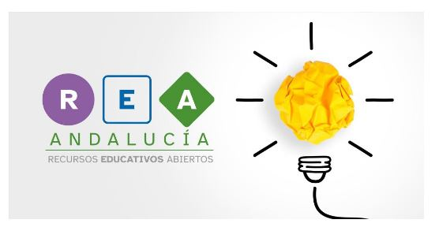

Autoría

| Título | Introducción a la programación con Scratch |
| Descripción | REA de la materia de Computación y Robótica para 1º de ESO donde se introducen a los alumnos/as en el mundo de la programación de la mano de Scratch |
| Persona elaboradora de contenido | Juan Antonio Ramos Martín |
| Persona asesora en DUAy lectura fácil | Rocío Molina Gallardo |
| Persona soporte técnico | Rocío Molina Gallardo |
| Persona coordinadora de la materia | Rocío Molina Gallardo |
| Organización | Dirección General de Formación del Profesorado e Innovación Educativa. Consejería de Educación y Deporte. Junta de Andalucía. Curso Competencia digital Docente. Nivel B2 |
| Licencia | Licencia Creative Commons Reconocimiento No comercial Compartir igual 4.0 |
Este contenido fue creado con eXeLearning, el editor libre y de fuente abierta diseñado para crear recursos educativos.